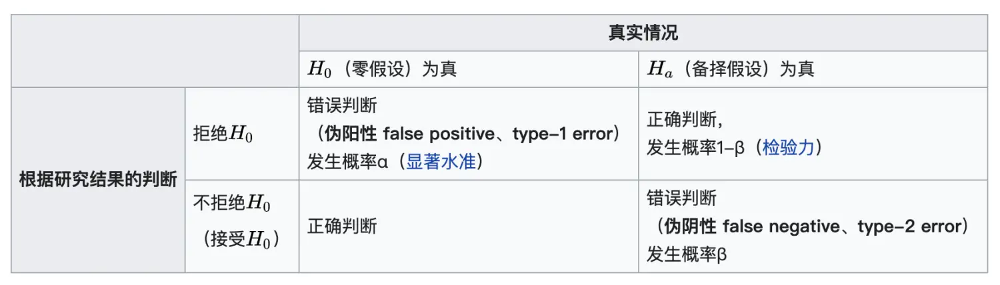

在假说检验中，有一种假说称为“零假设”，记为H0 ，假说检验的目的是利用统计的方式，推翻零假设的成立，也就是备择假设（H1）成立。
若零假设事实上成立，但统计检验的结果拒绝零假设（接受备择假设），这种错误称为第一型错误(错误率记为α)。若零假设事实上不成立，但统计检验的结果不拒绝零假设（接受零假设），这种错误称为第二型错误(错误率记为β)。

相关概念
正确率：1 - α，实验实际没有差异，检验认为没有差异的概率；
功效（power）：1 - β，实验实际有差异，检验认为有差异的概率。
对假设检验的评估，就是检验正确性、功效是否符合预期。
为什么要进行评估？
对照试验的关键是数据和检验方法，我们要评估的是采用某种假设检验对样本数据检验的正确性(α控制水平)以及功效(power)。
正确性 正确是可以进行检验的前提。现实中经常遇到未满足前提的情况。
例如常用检验算法为t检验，需要样本的均值服从正态分布。现实中样本常常遇到均值偏离正态分布的情况。
> 很多是因为样本偏斜较大，需要更多的样本量才能满足前提。微软建议均等样本实验，每组样本量至少要大于偏度方的355倍。功效 在满足正确性前提后，我们希望尽可能高效识别出真实差异。
同样的数据，不同检验算法往往有不同的功效；相同的采样，不同的口径对应不同的样本空间，功效也会有差异。
进行评估的前提
对正确性、功效的评估，等同于对α、β的评估：
α = p{判断为不同 | 实际相同}
β = p{判断为相同 | 实际不同}
因此我们要知道真相，才可以进行评估，一般使用两种数据：
- 模拟数据
通过程序生成或者直接从满足条件的总体中抽样。
这让我们成为了“上帝”，提前知道总体是什么样子，对抽样进行检验时理想情况应该是什么样子。通过大量测试，得到接近实际概率的频率，并进行评估。
- 可信的标注数据
很多研究经过大量的复验，结果是可信的，可以用来回测。
如何进行测试
先进行正确性检验，通过后再进行功效检验。
1. 正确性检验——AA测试
实际两组样本来自同一总体，没有区别。如果判断为显著差异，就是假阳性错误。进行大量测试（一般大于1000次），将预设α水平与实际频率进行对比评估。
2. 功效检验——AB测试
实际两组两本来自有差异的总体，根据已知的差异、预设的α、β可以计算出样本量。从两个总体中随机抽预设样本量带入检验。将实际频率与预设power进行对比。
仿真经验
1. 简单仿真
直接通过各种科学计算工具可以进行模拟。
2. 实际效果仿真
通过成熟模拟产生类似于实际情况的数据往往比较复杂，可以通过历史数据进行模拟测试。
AA测试：比较简单，可以对干净的历史数据进随机抽样测试。实际没有干预，真实情况没有区别的。
AB测试：可以对历史数据进行挑选出两个有差异的样本，对这两个样本进行重采样。此时可以认为两个样本就是实际总体，易知实际的总体效果。
总结
经过合理的对假设检验的检验，我们可以非常有信心告诉用户：我们的检验是对的，我们的检验是高效的。